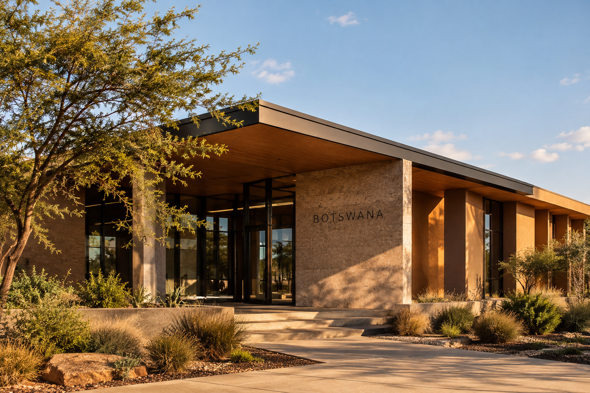
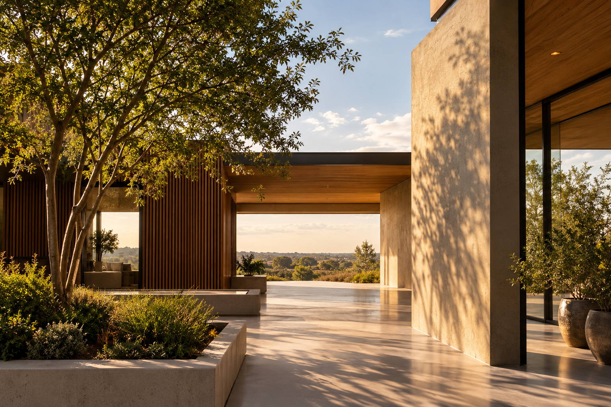
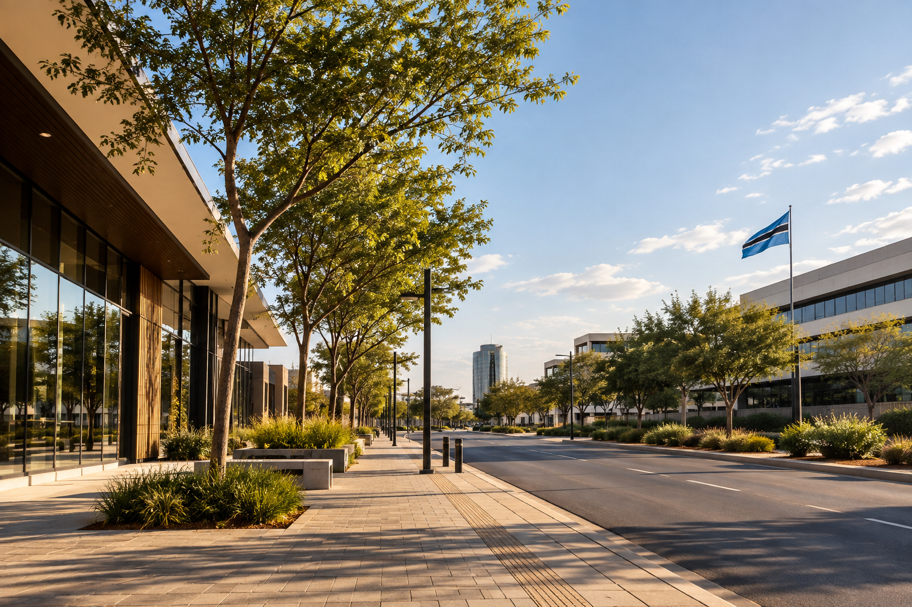

Why Do Some Spaces Feel Better Than Others?
Proportion, light, scale and movement all influence how we experience a space — often without us realising it.
Explore →INSIGHTS
Architecture is all around us. These are some of the ideas, questions and observations that shape how we see it.
FROM THE STUDIO
Proportion, light, scale and movement all influence how we experience a space — often without us realising it.
Explore →
How climate can become a design opportunity rather than simply a constraint.
Explore →
Looking beyond furniture and decoration to understand belonging in a space.
Explore →
Why the homes, streets and buildings around us quietly shape how we live.
Explore →BEYOND THE BUILDING
From the streets we move through to the spaces we call home, architecture is part of everyday life. We are interested in the ideas, places and experiences that sit around it.